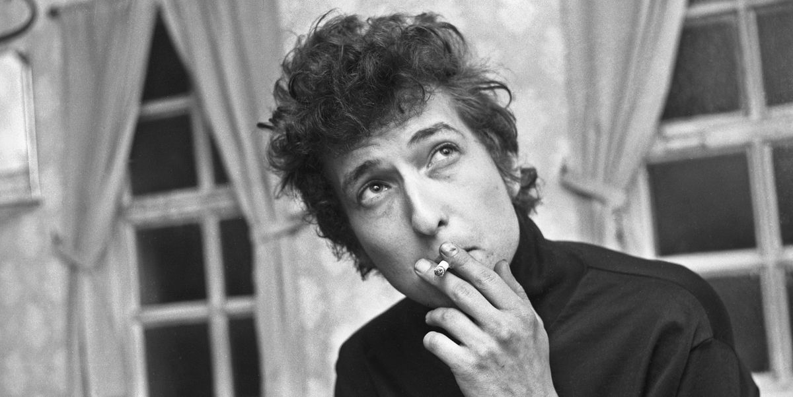

You are invited to Sam's Bob Dylan Core Birthday
When: Friday, December 15 7:00pm - 11:30pm
Where: 1223 SE 37th Ave, Portland OR 97214
Theme: Bob Dylan Core
"Bob Dylan Core" (noun) is a TikTok trend where people dress like Bob Dylan circa 1963. Some trademark looks include, but are not limited to, canvas coats, corduroys, denim, leather shoes, messy hair, long fingernails, and cigarettes.
Dressing as Suze Rotolo, Joan Baez, or an obscure Dylan reference is welcome and encouraged.
